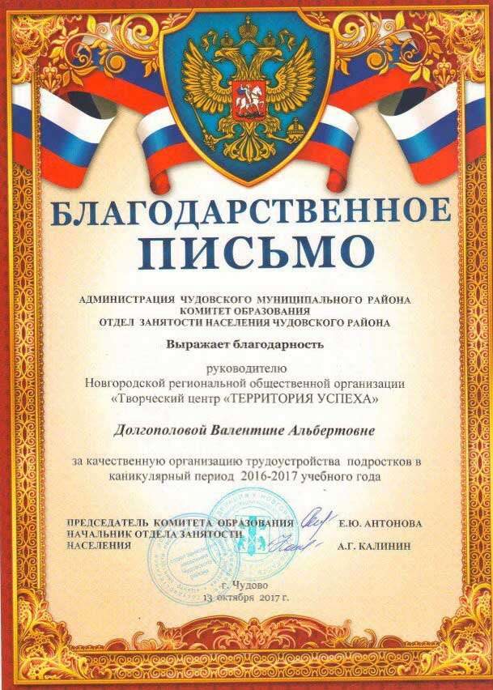
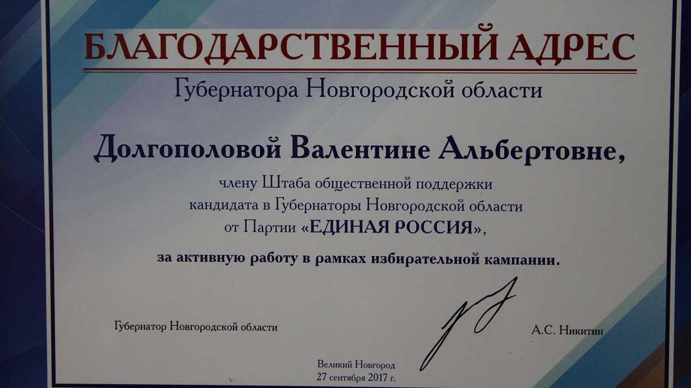
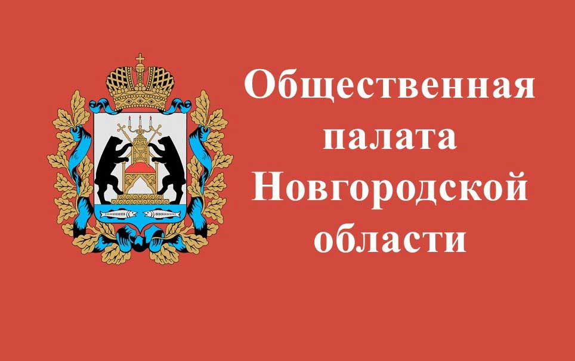
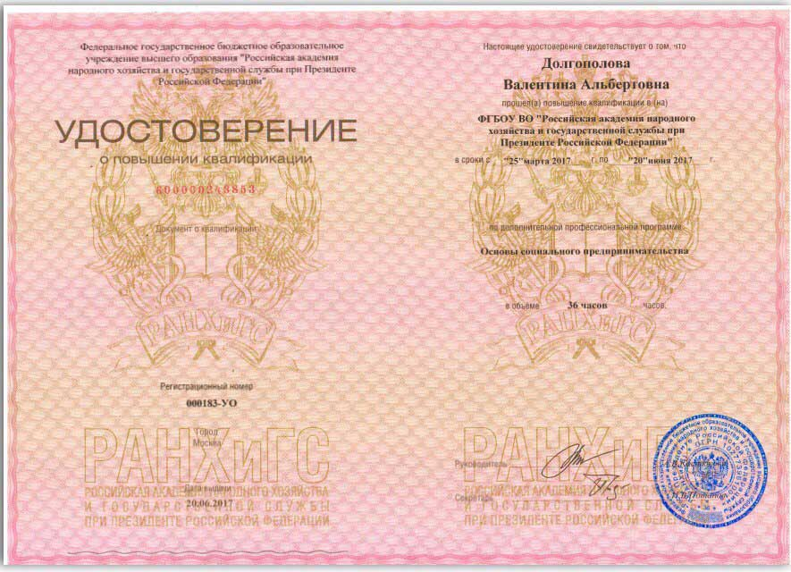
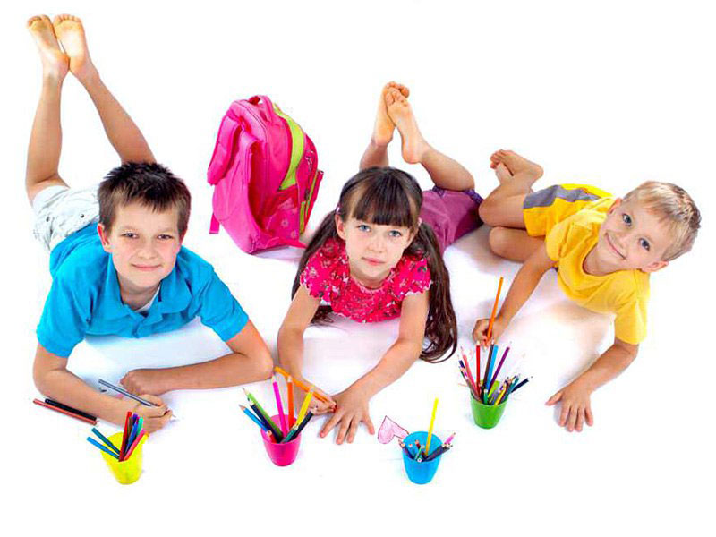
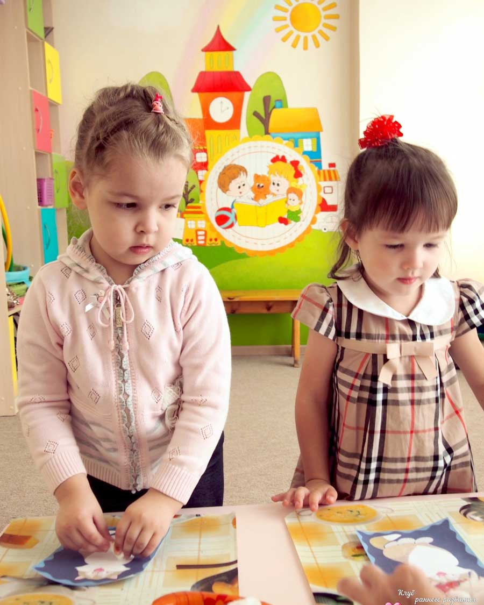
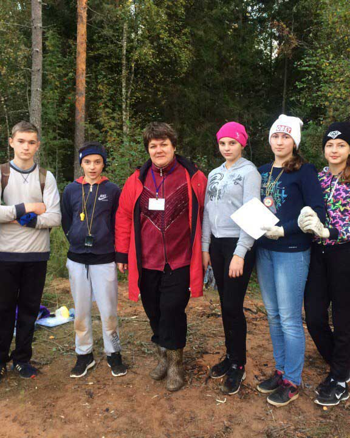

Последние новости
Слет трудовых отрядов

13 октября 2017 г. состоялся IV Слет трудовых отрядов, в программе которого участвовали члены социального проекта "ДОБРОСТРОЙ". На мероприятии демонстрировался сюжет кабельного телевидения "53 регион " о деятельности ребят в июне, июле 2017 г.
Награда губернатора
29 сентября 2017 г. Благодарственный адрес избранного губернатора Новгородской области Никитина Андрея Сергеевича вручён нашему руководителю Валентине Альбертовне Долгополовой!!! Валентина Альбертовна, в свою очередь, выражает благодарность за поддержку и помощь активной молодёжи:Гришина Дарья, Антипова Вероника, Белова Анастасия, Аниткина Анастасия, Долгополова Наталья!!!
В. А. Долгополова избрана членом общественной палаты Новгородской области

27 сентября 2017 года, на очередном заседании Новгородской областной Думы были утверждены 10 кандидатур в новый состав областной Общественной палаты. В состав Общественной палаты нового созыва вошли:
- Акманова Лариса Николаевна – кандидатура представлена Автономной некоммерческой организацией по оказанию услуг в области содержания и помощи животным «ЖИЗНЬ»;
- Бороненко Юлия Викторовна - кандидатура представлена Новгородской областной общественной организацией «За честное ЖКХ!»;
-
Долгополова Валентина Альбертовна - кандидатура представлена Чудовской районной общественной организацией женщин «Женская инициатива»;
- Никифоров Александр Евгеньевич - кандидатура представлена Новгородской областной организацией Общероссийской общественной организации «Российский Союз ветеранов Афганистана»;
- Орлова Светлана Михайловна – кандидатура представлена Новгородской областной общественной организацией «Поисковая экспедиция «Долина» памяти Н.И. Орлова»;
- Петров Дмитрий Евгеньевич - кандидатура представлена общественной организацией «Федерация регби Новгородской области»;
- Петрова Елена Николаевна - кандидатура представлена новгородским региональным отделением Общероссийской общественной организации «Российский Красный Крест»;
- Сомов Александр Вадимович - кандидатура представлена новгородской региональной общественной организацией «Спортивная федерация «Универсальный бой»;
- Ткаченко Татьяна Николаевна - кандидатура представлена региональной общественной организацией «Новгородская АНТИСПИД инициатива»;
- Хруцкая Ольга Александровна - кандидатура представлена Областной общественной организацией «Новгородская профессиональная ассоциация фармацевтических работников».
Это второй этап формирования Общественной палаты нового созыва. Согласно Областному закону «О регулировании некоторых вопросов организации и деятельности Общественной палаты Новгородской области» следующую «десятку» кандидатов, представленных зарегистрированными на территории области некоммерческими организациями, утвердят уже избранные члены общественного института.
Повышаем квалификацию

25 сентября 2017 г. в Центре инноваций социальной сферы Новгородской области проходил информационно- методический семинар "Социальный проект года - 2017". В рамках его проведения всем участникам были вручены удостоверения о повышении квалификации.
Мастер-классы для маленьких детей

Уважаемые родители города Чудово и Чудовского района, гости!!!
Творческий центр "Территория успеха" предлагает мастер - классы для ваших детей!!!
- "Филиппок" (6 лет);
- "Вместе с мамой" (4-5 лет);
- "Шахматы для дошкольников"
А также услуги логопеда-психолога.
Всю необходимую информацию можно получить по телефону:
8-952-482-93-87
Долгополова Валентина Альбертовна
Приглашаем в клубы по интересам
 Вниманию чудовцев и гостей города!!!
Творческий центр "Территория успеха" приглашает всех заинтересованных
увлекательно и с пользой провести свободное время в клубах по интересам!!!
- "Мастерская чудес";
- "Песчаные фантазии";
- "Я - лидер" (Поколение NEXT)$
- "Страна див";
- "За страницами истории";
- "Математический мир";
- "Литературные герои классических произведений";
- "В мире физики";
- "Сад и огород"
Всю необходимую информацию можно получить
по телефону:
8-952-482-93-87 Долгополова Валентина Альбертовна
На районном туристическом слете

16 и 17 сентября 2017 г. руководитель нашей организации Валентина Альбертовна Долгополова вместе с волонтерами приняли участие в 50 районном туристическом слете среди школьных команд, оказав огромную поддержку и помощь в организации судейства!!!